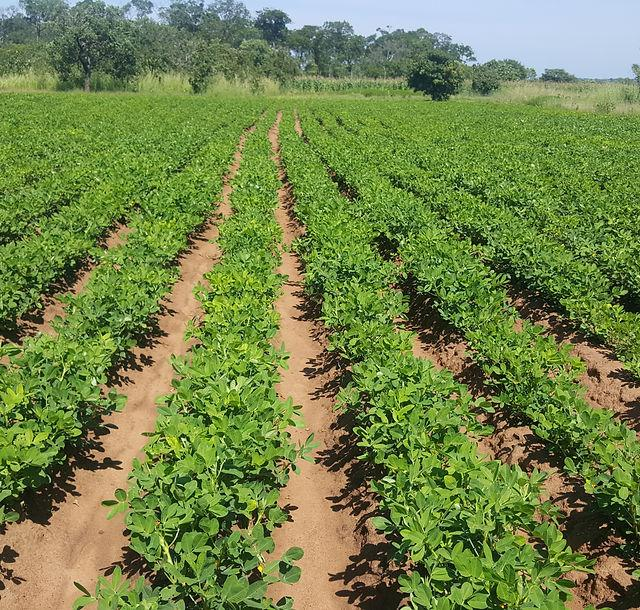

Sustainability
Promote soil care, water conservation and responsible use of farm inputs.
WHO WE ARE
An agricultural information project focused on learning, productivity and sustainable farming.

Green Harvest Agriculture is presented as a website project that organises information about farming, agricultural products, services and learning resources in one place.
The project is designed to make agricultural information easier to explore for students, farmers and other visitors.
A productive agricultural community that values knowledge, responsible practices and care for the environment.
To share clear introductory information and encourage informed, sustainable agricultural practices.
OUR VALUES
Promote soil care, water conservation and responsible use of farm inputs.
Present information in a simple, organised and understandable way.
Recognise the importance of farmers, families and local agricultural networks.